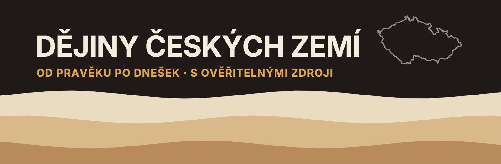

Dějiny českých zemí – zdroje a obrázky
Zdroje a autoři obrázků k videím kanálu. Každý obrázek má uvedeného autora, licenci a odkaz na původní soubor.
▶ Kanál na YouTube- Díl 1: První lidé: od nejstarších nástrojů po lovce mamutů
- Díl 2: První zemědělci: neolit a eneolit v českých zemích
- Díl 3: Doba bronzová a halštat: od únětické kultury po Býčí skálu
- Díl 4: Keltové a Bohemia: doba laténská v českých zemích
- Díl 5: Germáni a Řím: Markomani, legie na Moravě a stěhování národů
- Díl 6: Příchod Slovanů a Sámo: první Slované v českých zemích
- Díl 7: Velká Morava: první stát na našem území
- Díl 8: První Přemyslovci: od Bořivoje po pád Libice
- Díl 9: Přemyslovský stát: od polské okupace po dohodu bratrů
- Díl 10: Zlatá bula sicilská: koruna pro Přemyslovce a princezna Anežka
- Díl 11: Král železný a zlatý: Přemysl Otakar II., Moravské pole a konec Přemyslovců